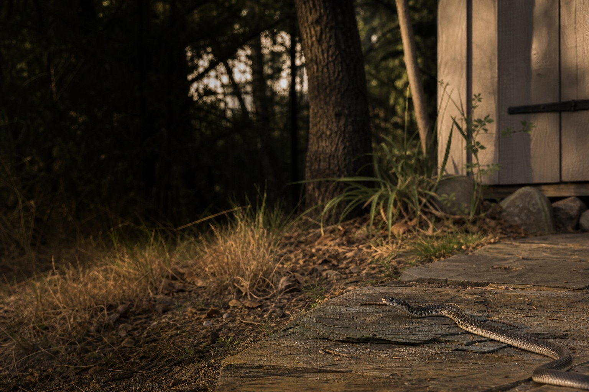

Describe the sighting
Share where the snake was seen and whether it is still visible from a safe distance.
Request provider options for snake concerns around yards, garages, sheds, and exterior spaces. Lacerta does not perform removal directly.
Lacerta helps homeowners submit snake-related concerns and compare provider options that may discuss response availability, safe-distance guidance, habitat factors, and written terms.

Share where the snake was seen and whether it is still visible from a safe distance.
Lacerta may identify available provider options for snake concerns.
Discuss response availability, provider guidance, and service scope directly.
Compare pricing, methods, and terms before authorizing service.
Ask whether a provider is available for your location and timing.
Ask for provider guidance and avoid close contact or species identification guesses.
Discuss yard features, hiding areas, debris, or attractants that may be relevant.
Ask whether local wildlife rules affect the provider's approach.
Verify provider documentation directly before continuing.
Review pricing, scope, exclusions, and service terms.


Ask providers about safe-distance guidance, response availability, and local rules. Lacerta does not identify species or perform removal.
No. Keep a safe distance and ask a local provider for guidance instead of making identification guesses.
Ask whether the provider is available for your area and timing, and what information they need before responding.
Participating providers set pricing, availability, methods, warranties, and service terms.
No. Lacerta is an independent matching platform and does not perform wildlife removal directly.